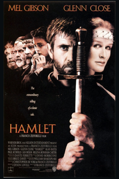
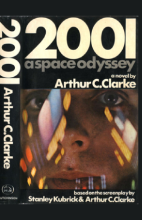
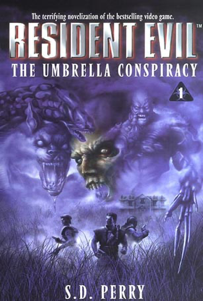

Media Transposition
Intermediality in the sense of medial transposition (as for example film adaptation, novelization, and ekphrasis), has to do with the transformation of a given media product (a text, a film, etc.) or of its substratum into another medium. This category is a product-oriented, genetic conception of intermediality, in which the original text is the source of the newly formed media product, whose formation is based on a media-specific and obligatory intermedial transformation process. (Rajewsky 2005).
Film Adaptation
Film and literature have a strong relationship about many years during the history of cinema. It has been believed that adaptation is the interpretation of the original text as mirror, derivative or secondary production. Film is the appearance of connection between literature and cinema. Literature needs words to express about feelings and issues of community, cinema needs devices and techniques to be applied to produce film to be closer to audience and people. Literature is the art of expression; cinema is actually considered the universal art in which it unifies a large number of interested people. Some critics believe that literature inspires cinematic works, and sometimes it is inspired by cinema (Alnajm 2017).

Novelization
To write a novel based on a film, a video game, a TV series or a
comic.
Ex: 2001: A Space Odyssey, Resident Evil; Once Upon a Time.
 
Ekphrasis
Mid 17th century: via Latin from Greek ekphrasis ‘description’, from ekphrazein ‘recount’, from ek- ‘out’ + phrazein ‘tell’. It is he description in prose or poetry of a visual work of art, such as painting, a sculpture, or even a photograph.

See also Media Combination